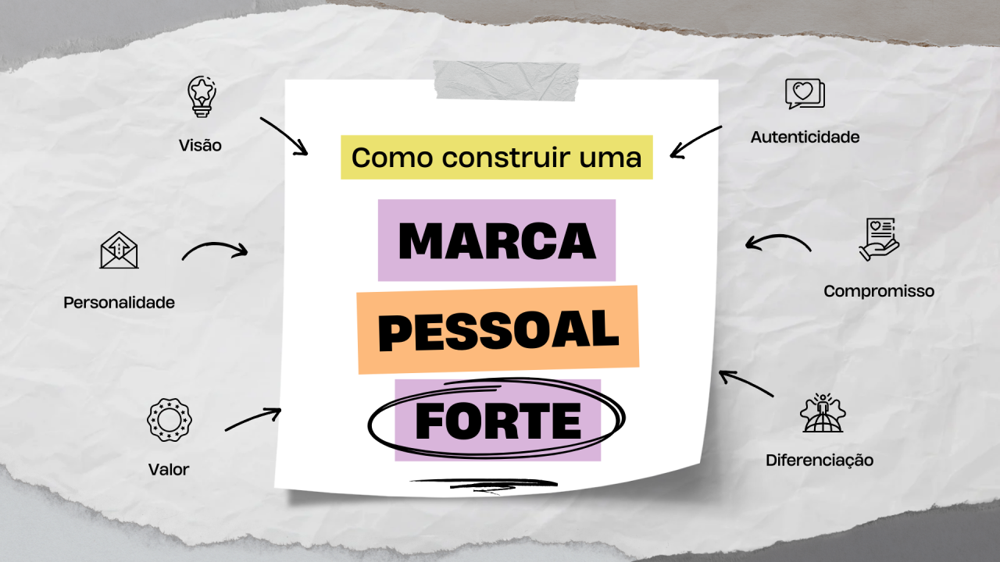

Bem vinda a M@rca pessoal!
Como criar sua Marca Pessoal?
Quer se destacar no mercado de tecnologia e conquistar novas oportunidades? Nosso serviço de criação de Marca Pessoal é exatamente o que você precisa! Vamos te ajudar a construir uma presença online autêntica e impactante, com um site que mostra suas habilidades e valores, um currículo que chama atenção e um perfil no LinkedIn que abre portas. Além disso, oferecemos treinamentos e simulações de entrevistas para te preparar para qualquer desafio.
Invista na sua carreira e torne-se uma referência na sua área.
Comece hoje a construir uma Marca pessoal que realmente faz a diferença!
